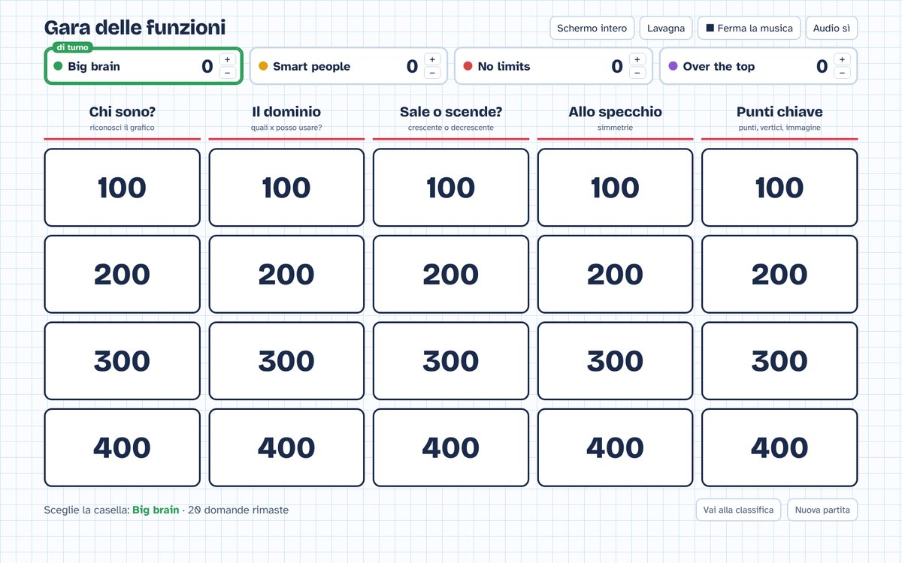
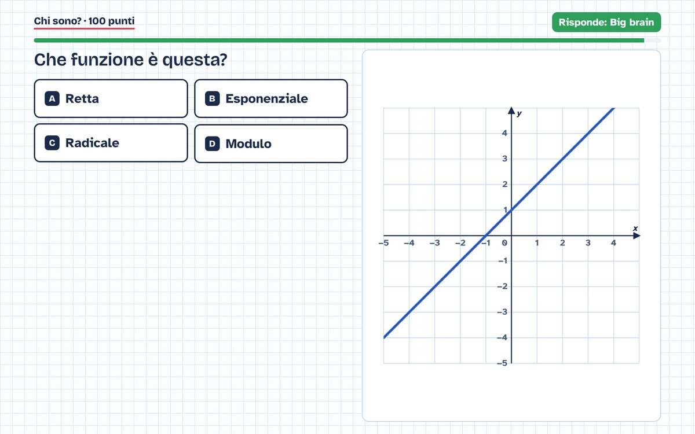

Gioco a squadre da fare alla LIM sulle funzioni: retta, esponenziale, radicale e modulo. Venti domande per riconoscere grafici ed equazioni, trovare il dominio, capire se la funzione sale o scende, scoprire simmetrie e punti chiave.
La classe si divide in squadre. La squadra di turno sceglie una casella del tabellone: più punti vale, più la domanda è difficile.
La squadra ha 30 secondi (il timer si può disattivare) per toccare la risposta giusta sulla LIM.
Se sbaglia, un'altra squadra può alzare la mano e rubare la domanda. Si può scegliere se chi sbaglia perde punti.
Dopo ogni domanda il grafico spiega la risposta. Vince chi ha più punti quando il tabellone è vuoto.
Consiglio: all'inizio della partita premete "Schermo intero" per vedere tutto in grande sulla lavagna.